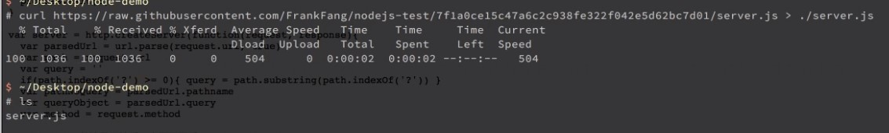
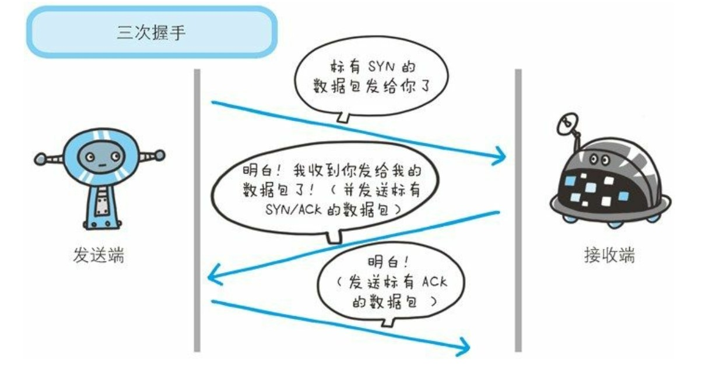
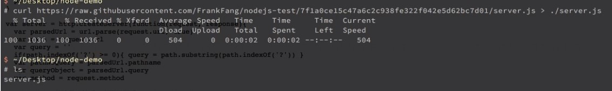

代码见:
https://raw.githubusercontent.com/FrankFang/nodejs-test/7f1a0ce15c47a6c2c938fe322f042e5d62bc7d01/server.js

服务端输入
node server.js 8888之后服务端就一直在等,一直到客户端输入: Node.js_files/d02e8c7a-12bf-4674-bb6d-5d8d0bb0093f.jpg)
http是一个控制如何书写内容的协议;
tcp是控制如何传输的协议;
1. 客户端：我要连接你了，可以吗
2. 服务端：嗯，我准备好了，连接我吧
3. 客户端：那我连接你咯。
4. 开始后面步骤
有关三次握手的理解:
为了准确无误地将数据送达目标处， TCP 协议采用了三次握手
（three-way handshaking） 策略。 用 TCP 协议把数据包送出去后， TCP不会对传送后的情况置之不理， 它一定会向对方确认是否成功送达;
握手过程中使用了 TCP 的标志（flag）-SYN（synchronize） 和
ACK（acknowledgement） 。
发送端首先发送一个带 SYN 标志的数据包给对方。 接收端收到后，回传一个带有 SYN/ACK 标志的数据包以示传达确认信息。 最后， 发
送端再回传一个带 ACK 标志的数据包， 代表“握手”结束。
若在握手过程中某个阶段莫名中断， TCP 协议会再次以相同的顺序发送相同的数据包。

在网中的重要节点处称为网关(下面讲路由的时候有讲到;)
127.0.0.1 localhost，意思就是 localhost 指向 127.0.0.1，所以 localhost 也表示设备自己。不信你 ping localhost 试试，会发现实际上是在 ping 127.0.0.1你想要访问一个设备（前提是你使用的是 TCP 或 UDP 协议。还记得吗，HTTP 就使用了 TCP），只指定 IP 是不够的，还必须指定端口（Port）。
端口其实就是一个编号，并不是一种硬件。
一个服务器（硬件）不一定只提供一种服务，比如一个服务器既提供 HTTP 服务，又提供 FTP 服务，还提供 SMTP 服务（邮件服务），那么只用一个 IP 是无法告诉服务器你想要使用哪种服务。
所以这里有一个重要的原则：一个端口对应一个服务。
比如
维基百科 把 0 到 1023 号端口对应的服务都告诉你了，点进去看看吧。
每个机器一共有 65535（2的16次方减1）个端口（这是协议规定的）。不过这些端口的使用由一些规定
上面都是 TCP/IP 相关的知识，如果你记不住，就记住下面这句话：
使用 HTTP 协议访问另一个 IP 时，必须同时提供 IP 和端口号，缺一不可。
那么问题来了
我访问 http://qq.com 时并没有提供端口号，为什么我依然可以访问
答：因为浏览器帮你加了默认端口号 80
测试1:
代码见:
https://raw.githubusercontent.com/FrankFang/nodejs-test/7f1a0ce15c47a6c2c938fe322f042e5d62bc7d01/server.js

服务端输入node server.js 8888之后服务端就一直在等,一直到客户端输入:
Node.js_files/d38ba615-a792-4553-a08b-b1c1fed68f2c.png)
注意:这里的192.168.0.104是这里的电脑主机(就是这台电脑)的ip(可以用ifconfig/ipconfig命令)
respond.write('hi\n')写第四部分；
respond.end()：结束响应；
response.setHeader('Content-Type', 'text/javascript; charset=utf-8')写第二部分；
response.statusCode = 404
写第一部分；
在浏览器里面输入网址,然后敲回车,发生了什么:
首先,浏览器会看你缺什么,缺端口号,加一个端口号，缺路径,加一个/;缺协议,帮你加一个http;
第一次是查询DNS，以百度为例,我想道www.baidu.com的ip是多少,于是浏览器向DNS发起了一次询问:电信啊,百度的Ip是多少,我想访问,好的,我给你一个真的百度Ip;
拿到这个Ip之后,浏览器向这个Ip发起了请求,请求的内容见request headers;
发了之后,百度的这个服务器接收了这个请求,他会看一下你的路径是什么,根据路径会设置一些header(详见response.setheader()),然后返回给你一个html(利用response.write()),然后结束(response.end()),结束之后就会把内容传给我下载;
下载完之后就把html解析出来给我们看见;边解析还要边找,看我们还有没我们请求的东西(比如png图片,gif动态图,css,js);all东西请求完了就拼给用户看；